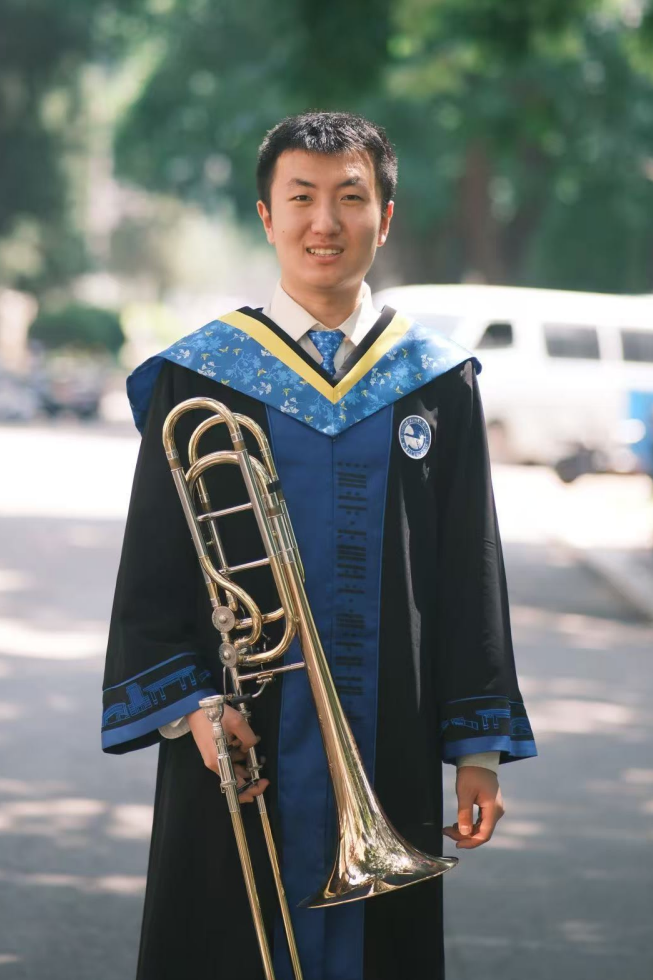

Kailong Zhang 张凯龙
M.Eng. Student
PRIS Lab, School of Artificial Intelligence
Beijing University of Posts and Telecommunications (BUPT)
Email: zhangkailong@bupt.edu.cn
GitHub | CV | Google Scholar
Advised by Heng Guo

About Me
I am currently pursuing my Master's degree (M.Eng.) at Beijing University of Posts and Telecommunications (BUPT), advised by Heng Guo. My research interests include computational photography and polarization imaging.
Education
- 2024.09 – Present M.Eng., BUPT, School of Artificial Intelligence
- 2020.09 – 2024.06 B.Eng., BUPT, School of Electrical and Electronic Engineering
Publications

PolarAnything: Diffusion-based Polarimetric Image Synthesis
ICCV 2025
Kailong Zhang†, Youwei Lyu†, Heng Guo*, Si Li, Zhanyu Ma, Boxin Shi
[Paper] [Project Page]
ICCV 2025
Kailong Zhang†, Youwei Lyu†, Heng Guo*, Si Li, Zhanyu Ma, Boxin Shi
[Paper] [Project Page]

SfPUEL: Shape from Polarization under Unknown Environment Light
NeurIPS 2024
Youwei Lyu, Heng Guo, Kailong Zhang, Si Li, Boxin Shi
[Paper] [Project Page]
NeurIPS 2024
Youwei Lyu, Heng Guo, Kailong Zhang, Si Li, Boxin Shi
[Paper] [Project Page]